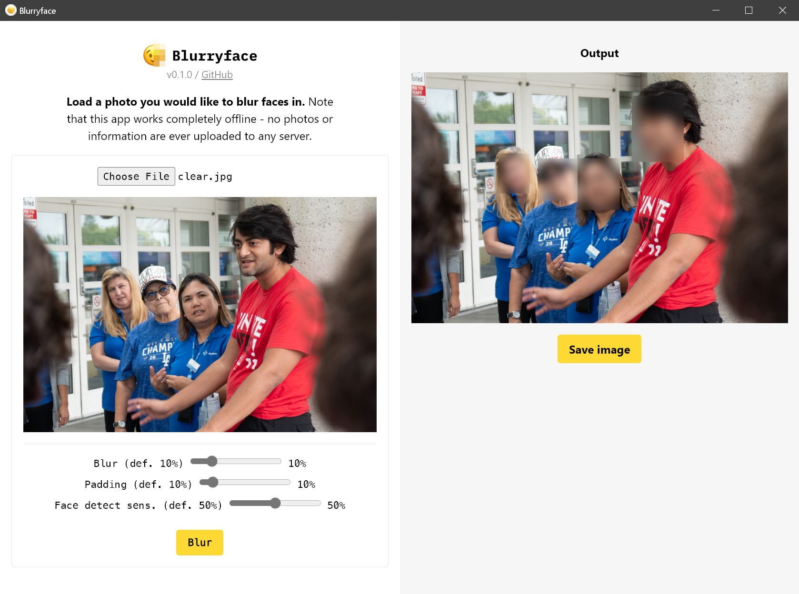

Blur faces in photos in one click
On-device/offline face blurring app. Free and open source.
Created by organizers, for organizers
FAQ
How does it work?
To automatically detect where faces are in a photo, Blurryface uses a face detection model called UltraFace, based off of a state-of-the-art model called RetinaFace. Specifically, it uses an implementation of UltraFace in a framework called ONNX, which it then runs in the app using WebAssembly through onnxruntime-web.
Blurryface then uses a Javascript library called Jimp to blur the faces in the photo.
Are my photos uploaded to a server?
No, nothing is uploaded to or downloaded from the internet when running Blurryface. The face detection model runs entirely on your computer. The entire model runtime and weights are bundled with the app itself.
Can I request new features in the app?
Yes, email me at hello@samsonzhang.com with feedback. I will not be working on this app consistently, but if I can I want to make this app useful for organizers, movement journalists, and others handling sensitive photos.
If you are a developer (especially with web development experience, as this app is built using web technologies and Tauri), please also feel free to leave an issue on GitHub or open a pull request if you want to implement something yourself. It's a pretty straightforward app so far and I've written developer documentation in the repo.
Who are you? Why did you make this app?
I'm a student journalist who has had to do a lot of blurring of photos and videos manually when covering Palestine solidarity actions. Other organizers and journalists have often reached out to me asking how I blur faces in my photos. Many people don't have access to or aren't comfortable with tools like Photoshop, and blurring photos manually can be time-intensive, so I thought there was a need for a tool like this.
Other student-organizer-developers have also contributed to the development of this app, and you can too if you have web development experience!